TwixT
| (require twixt) | package: twixt |
TwixT is an abstract, turn-based, two-player board game in which players try to connect their two sides of the board while preventing the opponent from doing the same. The twixt library provides a basic data model for representing, displaying, and playing TwixT games.
1 TwixT Boards
A TwixT board is a 24-by-24 rectangular board on which games of TwixT are played. Each space of the board contains a hole, in which a TwixT peg may be placed. The four corner spaces of the board do not contain holes; pegs cannot be placed in corners. The non-corner spaces on the edge of the board make up the TwixT border rows, and each player controls two rows on opposite sides of the board.
procedure
(twixt-board? v) → boolean?
v : any/c
value
procedure
Currently, this function occasionally produces illegal boards. Hopefully that will be fixed someday.
> (twixt-board-pict (sample-twixt-board)) 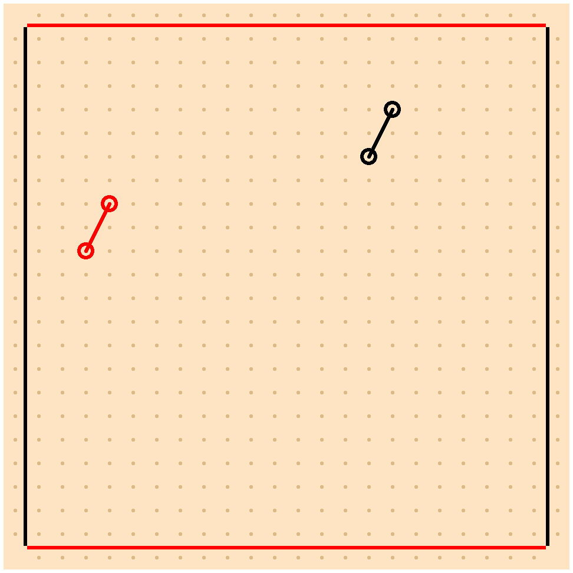
procedure
(twixt-board peg ...) → twixt-board?
peg : twixt-peg?
> (twixt-board-pict (twixt-board (red-twixt-peg #:row 8 #:column 9 right-down-link) (red-twixt-peg #:row 9 #:column 11) (red-twixt-peg #:row 11 #:column 10 up-right-link) (black-twixt-peg #:row 15 #:column 12) (black-twixt-peg #:row 13 #:column 11 down-right-link))) 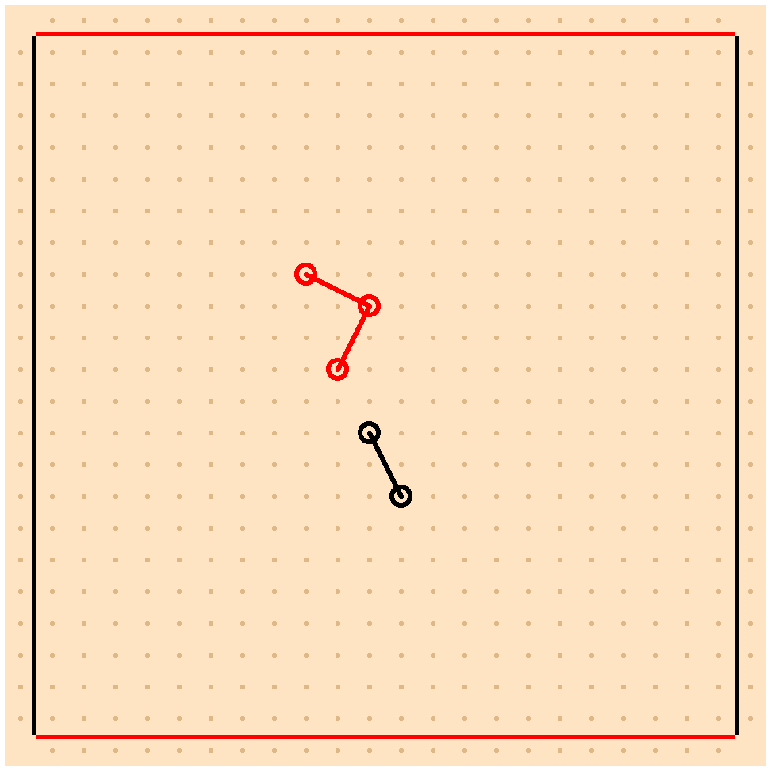
procedure
(twixt-board-get-peg board position) → (option/c twixt-peg?)
board : twixt-board? position : twixt-position?
(define board (twixt-board (red-twixt-peg #:row 9 #:column 11)))
> (twixt-board-get-peg board (twixt-position #:row 9 #:column 11))
(present
(twixt-peg
#:link-directions (set)
#:owner #<twixt-player:red>
#:position (twixt-position #:column 11 #:row 9)))
> (twixt-board-get-peg board (twixt-position #:row 4 #:column 18)) #<absent>
procedure
(twixt-board-put-all-pegs board pegs) → twixt-board?
board : twixt-board? pegs : (sequence/c twixt-peg?)
(define board (twixt-board (red-twixt-peg #:row 9 #:column 11)))
> (twixt-board-pict (twixt-board-put-all-pegs board (list (red-twixt-peg #:row 7 #:column 12 down-left-link) (red-twixt-peg #:row 10 #:column 13 left-up-link) (red-twixt-peg #:row 10 #:column 9 right-up-link) (red-twixt-peg #:row 12 #:column 14 up-left-link)))) 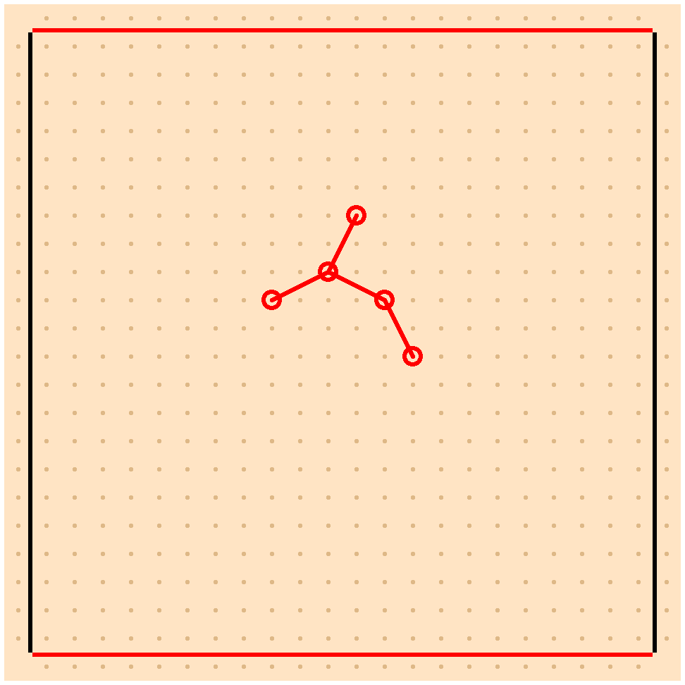
procedure
(twixt-board-pegs board) → (set/c twixt-peg?)
board : twixt-board?
(define board (sample-twixt-board))
> (twixt-board-pegs board)
(set
(twixt-peg
#:link-directions (set #<twixt-link-direction:down-right-link>)
#:owner #<twixt-player:red>
#:position (twixt-position #:column 13 #:row 10))
(twixt-peg
#:link-directions (set #<twixt-link-direction:right-up-link>)
#:owner #<twixt-player:black>
#:position (twixt-position #:column 15 #:row 17))
(twixt-peg
#:link-directions (set #<twixt-link-direction:left-down-link>)
#:owner #<twixt-player:black>
#:position (twixt-position #:column 17 #:row 16))
(twixt-peg
#:link-directions (set #<twixt-link-direction:up-left-link>)
#:owner #<twixt-player:red>
#:position (twixt-position #:column 14 #:row 12)))
> (twixt-board-pict board) 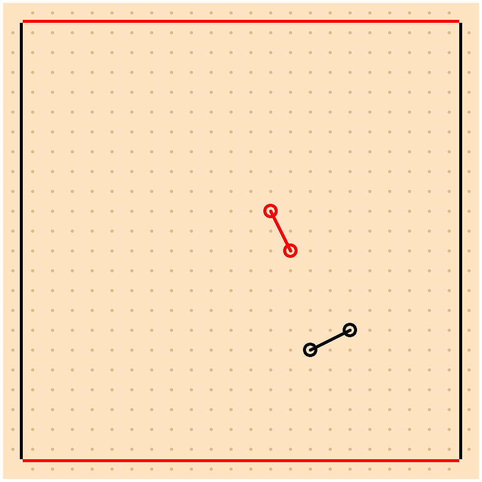
procedure
(twixt-board-occupied-positions board)
→ (set/c twixt-position?) board : twixt-board?
(define board (sample-twixt-board))
> (twixt-board-occupied-positions board)
(set
(twixt-position #:column 6 #:row 9)
(twixt-position #:column 14 #:row 17)
(twixt-position #:column 13 #:row 15)
(twixt-position #:column 4 #:row 8))
> (twixt-board-pict board) 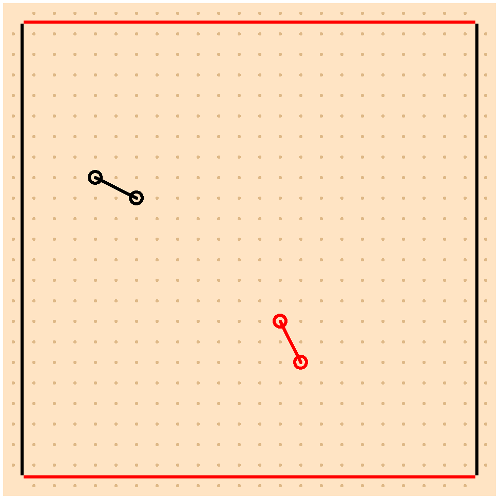
procedure
(twixt-board-links board) → (set/c twixt-link?)
board : twixt-board?
(define board (sample-twixt-board))
> (twixt-board-links board)
(set
(twixt-link
#:left-end (twixt-position #:column 4 #:row 17)
#:owner #<twixt-player:black>
#:right-end (twixt-position #:column 6 #:row 16))
(twixt-link
#:left-end (twixt-position #:column 11 #:row 6)
#:owner #<twixt-player:red>
#:right-end (twixt-position #:column 12 #:row 4)))
> (twixt-board-pict board) 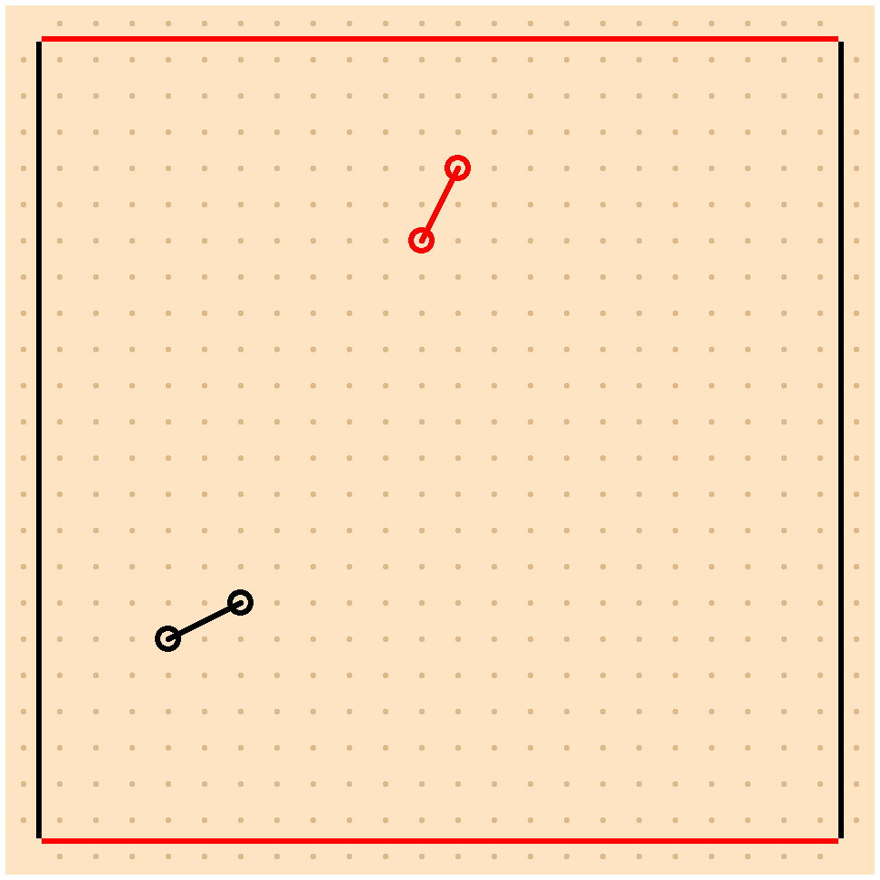
1.1 TwixT Board Positions
A TwixT position is a space on a TwixT board. Each board has 24 rows and columns, so positions are represented by a pair of integers between 0 and 23, with the top-left corner of the board corresponding to row zero and column zero.
procedure
(twixt-position? v) → boolean?
v : any/c
procedure
(twixt-position #:row row #:column column) → twixt-position?
row : twixt-index/c column : twixt-index/c
> (twixt-board-pict (twixt-board (black-twixt-peg #:row 4 #:column 0))) 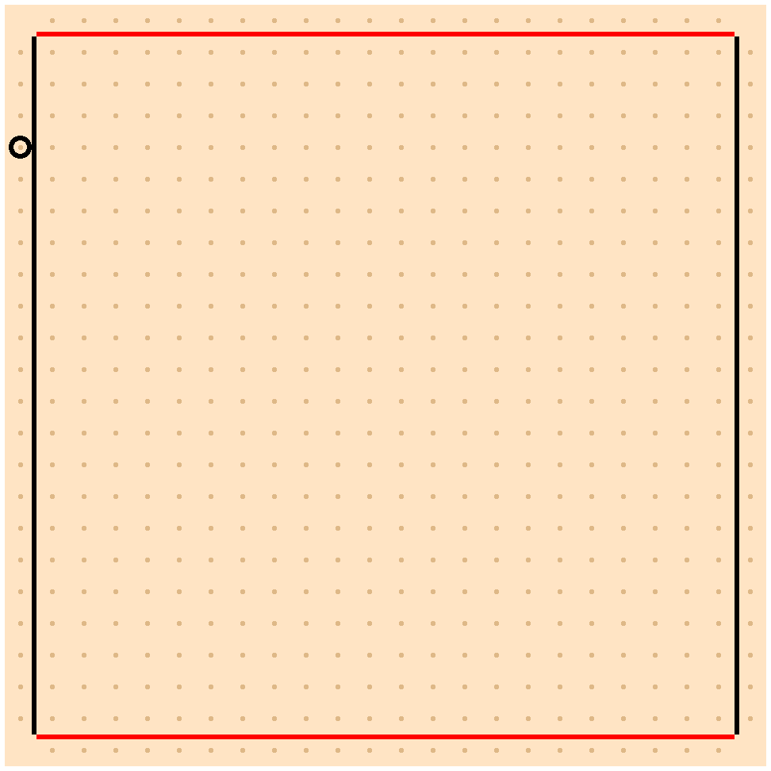
> (twixt-board-pict (twixt-board (red-twixt-peg #:row 1 #:column 3))) 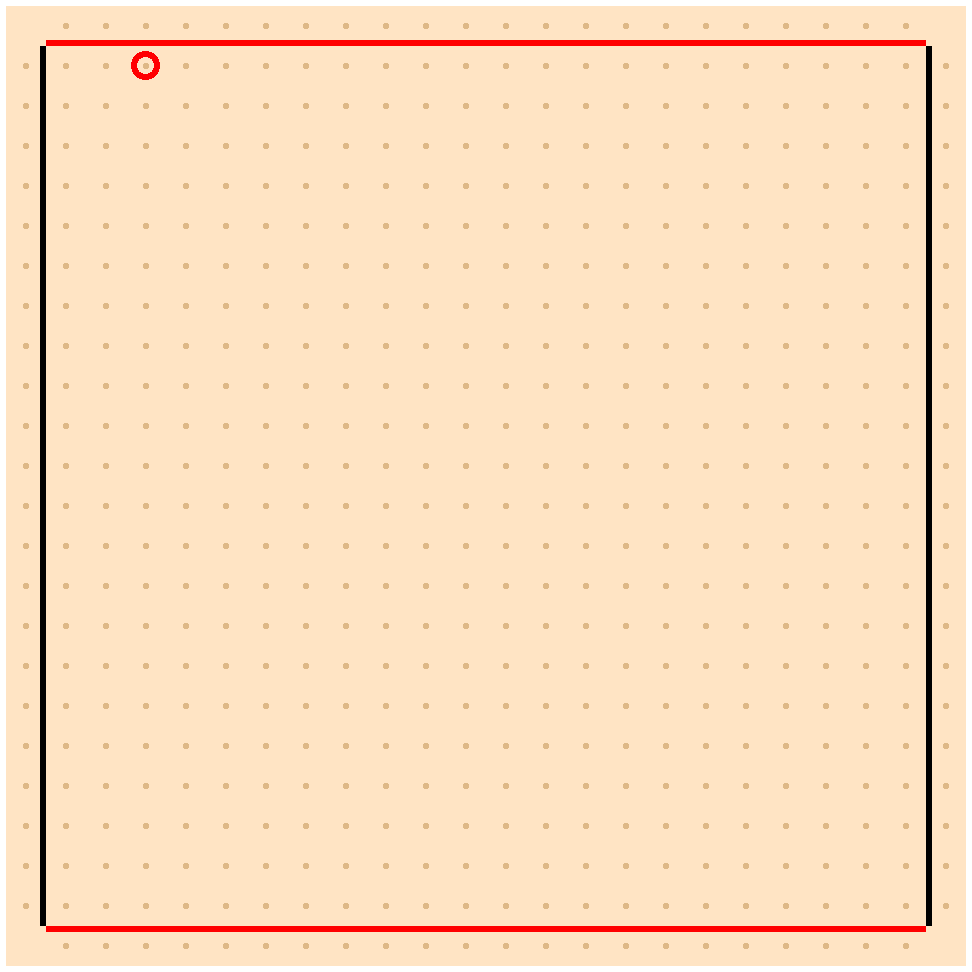
procedure
(twixt-position-row position) → twixt-index/c
position : twixt-position?
procedure
(twixt-position-column position) → twixt-index/c
position : twixt-position?
value
value
twixt-index/c : flat-contract? = (integer-in 0 23)
2 TwixT Players
There are two players in a game of TwixT, referred to as red and black. The red player always moves first. Note that the actual color of the displayed pieces may be different due to the use of a non-standard stylesheet such as monochrome-twixt-stylesheet. Regardless of the actual piece color, the player who moves first is called the red player.
procedure
(twixt-player? v) → boolean?
v : any/c
value
value
3 TwixT Pegs
A TwixT peg is a piece owned by one of the two TwixT players and placed somewhere on a TwixT board. Each peg may have TwixT links attaching it to the player’s other pegs.
procedure
(twixt-peg? v) → boolean?
v : any/c
procedure
(twixt-peg #:owner owner #:position position #:link-directions links) → twixt-peg? owner : twixt-player? position : twixt-position? links : (sequence/c twixt-link-direction?)
This is a general-purpose constructor for twixt pegs. When the owning player and set of links are statically known, using red-twixt-peg or black-twixt-peg may be more readable.
procedure
(red-twixt-peg #:row row #:column column link ...) → twixt-peg? row : twixt-index/c column : twixt-index/c link : twixt-link-direction?
> (twixt-board-pict (twixt-board (red-twixt-peg #:row 10 #:column 12 up-right-link down-right-link left-up-link) (red-twixt-peg #:row 8 #:column 13) (red-twixt-peg #:row 12 #:column 13) (red-twixt-peg #:row 9 #:column 10))) 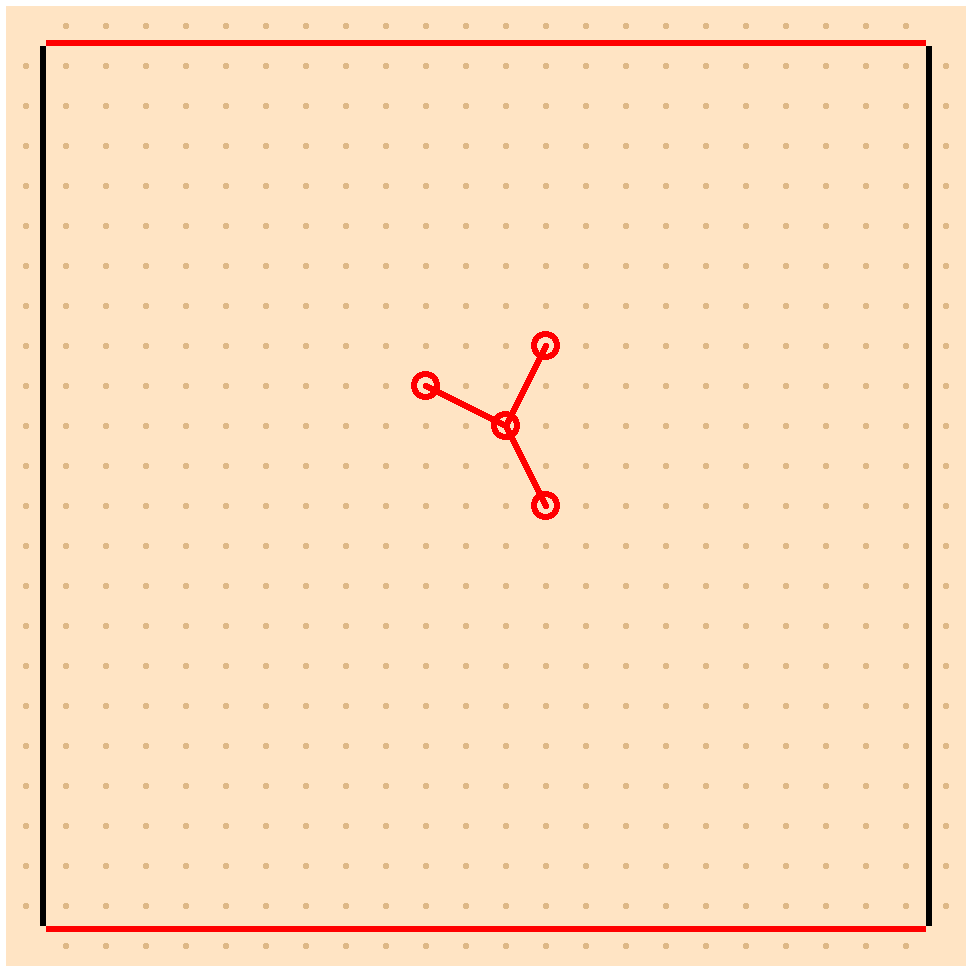
procedure
(black-twixt-peg #:row row #:column column link ...) → twixt-peg? row : twixt-index/c column : twixt-index/c link : twixt-link-direction?
> (twixt-board-pict (twixt-board (black-twixt-peg #:row 14 #:column 7 right-down-link) (black-twixt-peg #:row 15 #:column 9 right-up-link) (black-twixt-peg #:row 14 #:column 11 up-right-link) (black-twixt-peg #:row 12 #:column 12))) 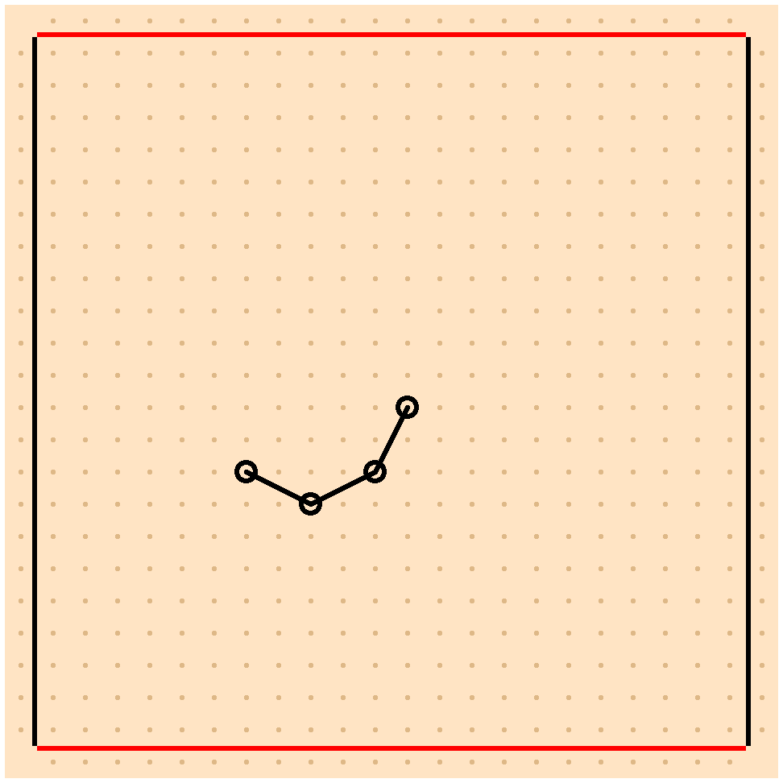
procedure
(twixt-peg-owner peg) → twixt-player?
peg : twixt-peg?
procedure
(twixt-peg-position peg) → twixt-position?
peg : twixt-peg?
procedure
(twixt-peg-links peg) → (set/c twixt-link?)
peg : twixt-peg?
procedure
(twixt-peg-link-directions peg) → (set/c twixt-link-direction?)
peg : twixt-peg?
3.1 TwixT Peg Links
A TwixT link is a link between two TwixT pegs owned by the same player. Linked pegs must always be a knight’s move apart, meaning two spaces apart horizontally and one space apart vertically or vice-versa.
procedure
(twixt-link? v) → boolean?
v : any/c
procedure
(twixt-link #:owner owner #:left-end left-end #:right-end right-end) → twixt-link? owner : twixt-player? left-end : twixt-position? right-end : twixt-position?
procedure
(twixt-link-owner link) → twixt-player?
link : twixt-link?
procedure
(twixt-link-left-end link) → twixt-position?
link : twixt-link?
procedure
(twixt-link-right-end link) → twixt-position?
link : twixt-link?
procedure
v : any/c
value
value
value
value
value
value
value
value
4 Drawing TwixT Games
procedure
(twixt-board-pict board [ #:stylesheet styles]) → pict? board : twixt-board? styles : twixt-stylesheet? = standard-twixt-stylesheet
> (twixt-board-pict (sample-twixt-board)) 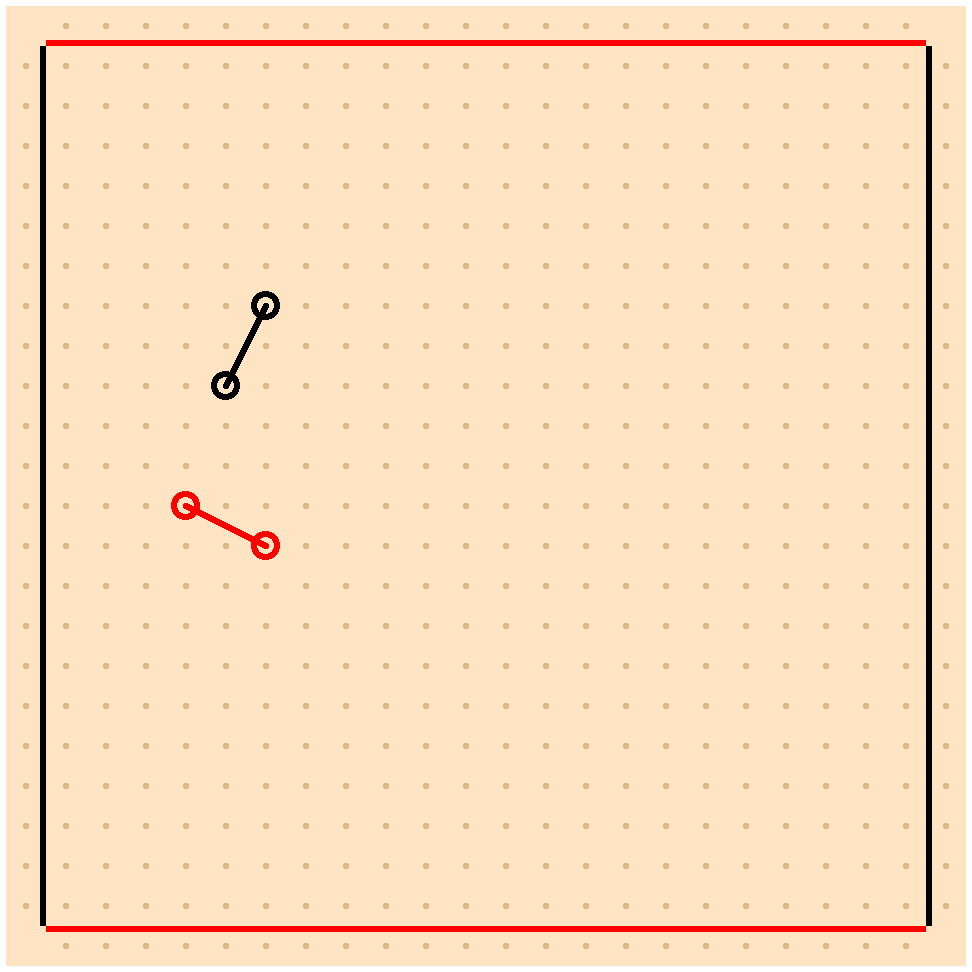
procedure
(twixt-stylesheet? v) → boolean?
v : any/c
> (twixt-board-pict (sample-twixt-board) #:stylesheet monochrome-twixt-stylesheet)